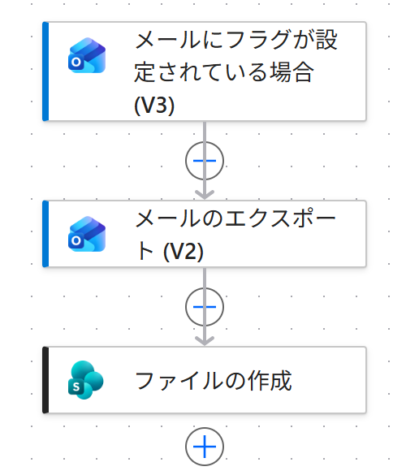

Vol.151-3
実際に作ったフロー：アクションは3つ

PA45 Demo 環境に作ったフローの画面です。
トリガーのあと、書き出すと保存するの2つだけで終わります
トリガーのあと、書き出すと保存するの2つだけで終わります

1231
メールにフラグが設定されている場合 (V3)
受信トレイでフラグを付けたら起動
2
メールのエクスポート (V2)
メッセージ ID を渡して.eml を作る
3
ファイルの作成
案件メールフォルダーに日時_差出人_件名で保存
保存したファイルは Outlook で開ける
ダブルクリックで、受け取ったときと同じ形で読める
フォルダーを案件ごとに分けるなら
条件を足して、件名の言葉で保存先のパスを変える
向いている人営業・購買の担当契約や見積を扱う人監査に備えたい管理部門引き継ぎの多いチーム
出典：Microsoft Learn